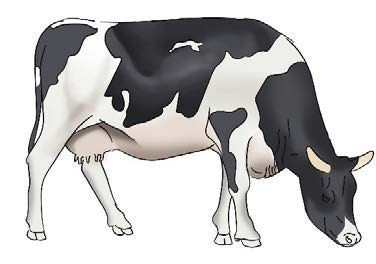
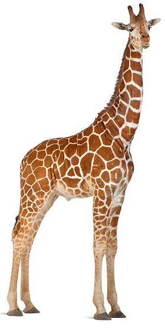
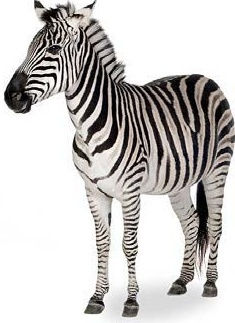

Moo! Moo! Moo! Mimi ni ng’ombe, maziwa na nyama nawapatia. Kula nyama, kunywa maziwa ujenge mwili wako. Mimi ni ng’ombe, ng’ombe. Moo! Moo! Moo!
Majigambo ni kitendo cha kujisifia na kuongea kwa kutamba kwa hisia. Majigambo yanaweza kutumika katika kuburudisha na kuelimisha jamii.
Soma majigambo yafuatayo, kisha jibu maswali:

Moo! Moo! Moo! Mimi ni ng’ombe, maziwa na nyama nawapatia. Kula nyama, kunywa maziwa ujenge mwili wako. Mimi ni ng’ombe, ng’ombe. Moo! Moo! Moo!

Ha! Ha! Ha! Mimi ni mrefu, shingo yangu inavutia. Watalii ndani na nje, uchumi kuuinua. Mimi ni twiga, twiga. Ha! Ha! Ha!

Ohi! Ohi! Ohi! Mimi ni mzuri, kwa mvuto nawazidi wanyama wote porini. Tumia ngozi yangu bidhaa kujipatia. Mimi ni pundamilia. Ohi! Ohi! Ohi!
Igiza sauti za wanyama mbalimbali. Chagua mnyama unayempenda, kisha ujigambe kwa kuiga sauti yake na namna anavyotembea.